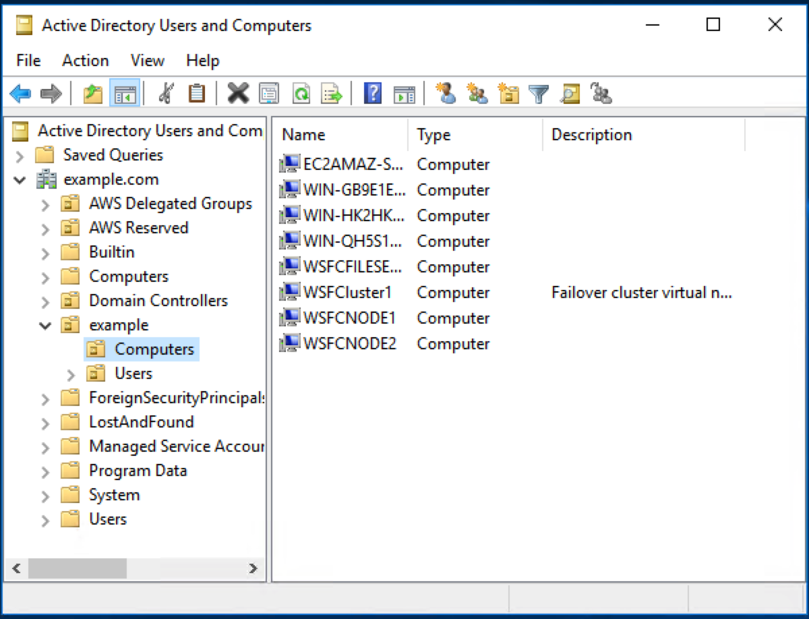
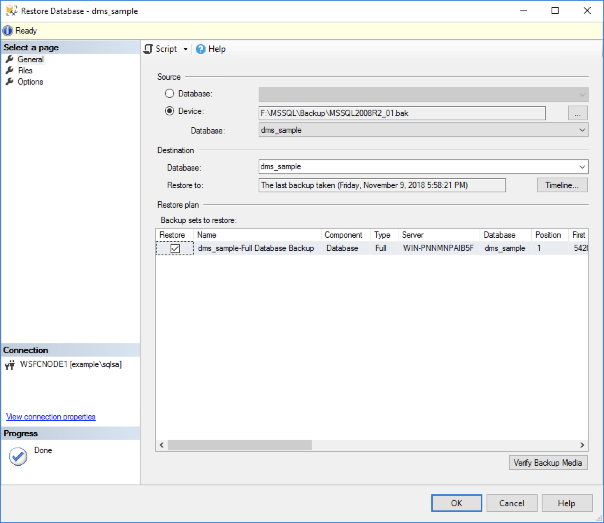
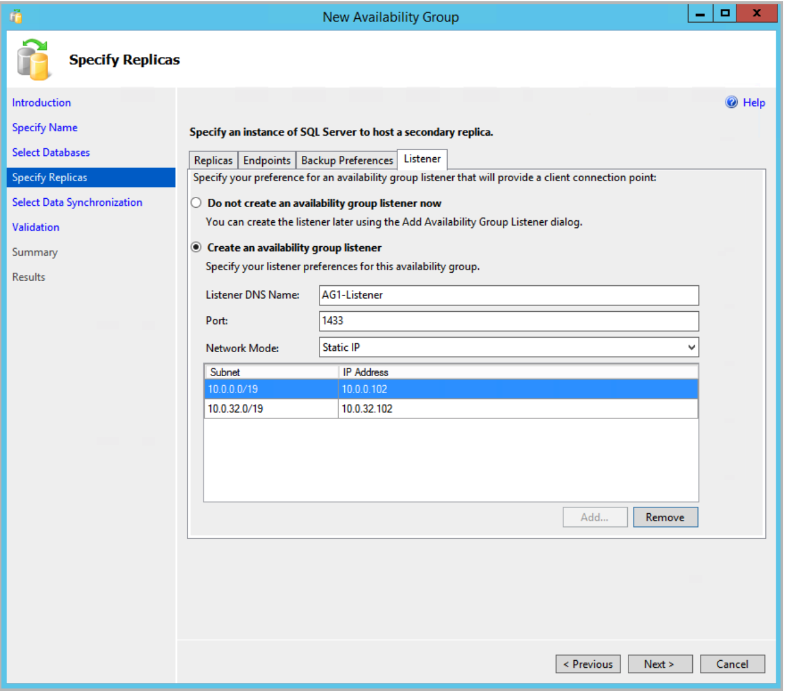

Rehost
Rehost is essentially a lift-and-shift. In this case you will run SQL Server on Amazon Elastic Compute Cloud (EC2). This will be a relatively easy migration, but you will need to address a few issues. For example, EC2 does not allow shared storage, therefore you will need evaluate new options. Most likely Always On Availability Groups. You will also need to decide how to migrate data.
Proposed Solution
Spoiler Alert Before you read the proposed solution spend time talking with your team members.
Log into ONPREM
NOTE: we are using ONPREM as a jump box (e.g. bastion host)
-
Log into your account using the credentials provided.
-
Change the region to Ireland from the menu in the top left corner.
-
Choose EC2 from the list of services, and click on Instances.
-
Select the server named ONPREM, and click the Connect button at the top of the screen.
-
Download the Remote Desktop File and connect as Admin@example.com and the password provided.
Log into the WSFCNode1
-
Click the start button. This is Windows 2012, so you need to find that magic pixel in the bottom left corner.
-
Launch Remote Desktop Connection.
-
Enter 10.0.0.100 as the computer name.

-
Log in as Admin@example.com and the password provided.
Download the backup file
-
Start a new PowerShell session as an administrator.
-
Run the following command to download the file. This will take a few minutes.
Read-S3Object -BucketName win310 -Key MSSQL2008R2_01.bak -File F:\MSSQL\Backup\MSSQL2008R2_01.bak
Set up Permissions for the Cluster Object
-
Run Windows PowerShell as an administrator, and use the following command to install Active Directory Management Services:
Add-WindowsFeature RSAT-ADDS-Tools -
Open Active Directory Users and Computers
-
In the navigation bar, choose View, Advanced Features to see the advanced features for Active Directory Users and Computers.
-
Right click on Computers (see below) and click Properties.

-
On the Security tab, choose Advanced.
-
In the Advanced Security Settings dialog box, choose Add.
-
Next to Principal, choose Select a principal.
-
Choose Object Types, select Computers, and then choose OK.
-
Type WSFCLUSTER1, choose Check Names, and then choose OK.
-
Add the Create Computer objects permission to this principal, and then choose OK.
-
In the Advanced Security Settings for Computers screen, choose OK.
-
In the Computer Properties screen, choose OK.
Connect to SQL Server
-
Click the start button.
-
Right click on Microsoft SQL Server Management Studio, and Run as a different user.
-
Run as sqlsa@example.com with the password provided.
-
On the Connect to Server dialog, leave the defaults and click Connect.

Note: we are connecting as sqlsa because the domain admin does not have access to the database instance. It is generally a good idea to keep these roles separate.
Restore the Backup File
-
In Object Explorer, right click on Databases and choose Restore database.
-
Find the file you downloaded earlier and restore it. For example:

Create an Availability Group
-
In Object Explorer, right-click AlwaysOn High Availability and launch the New Availability Group wizard.
-
On the Introduction page, choose Next.
-
On the Specify Availability Group Name page, type SQLAG1, and then choose Next.
-
On the Select Databases page, choose the database you created or attached in the previous section, and then choose Next.
-
On the Specify Replicas page, add the second cluster node WSFCNode2, and then choose Automatic Failover. It should look like this.

-
On the Listener tab, choose Create an availability group listener, and provide a Listener DNS Name AG1-Listener.
-
Then specify the TPC port used by this listener as 1433.
-
Add the two private subnets the cluster nodes were deployed into and a corresponding IPv4 address. The results should look like this:
.
-
Click Next
-
On the Select Initial Data Synchronization page, choose Full database and log backup.
-
In the shared network location box, type \\WSFCFileServer\replica.
-
Choose Next.
-
On the Validation page, choose Next.
-
On the Summary page, choose Finish, and then close the wizard.
Simulate a Failover
-
In Object Explorer, click Connect and then Database Engine. Leave the existing connection open.
-
Enter AG1-Listner as the server name and click Connect.
-
Navigate to Always on High Availability > Availability Groups.
-
Right click on SQLAG1 and choose Failover.
-
Click Next and Next again.
-
On the Connect to Replica screen, click Connect.
-
On the Connect to Server dialog, click Connect.
-
Click Next and then Finish.
Test the Replica
-
You should still have WSFCNode1 in the object explorer.
-
Expand WSFCNode1 > Databases > dms_sample.
-
You should get an error because the database is now running on WSFCNode2.
-
Expand AG1-Listner > Databases > dms_sample.
-
You can still access the database because AG1-Listner always points to the active node.